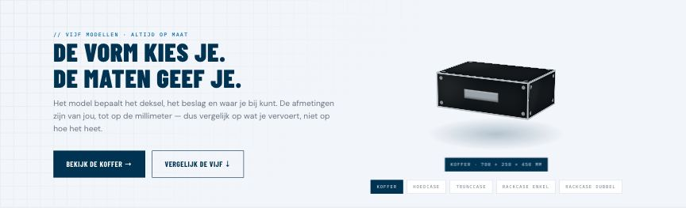
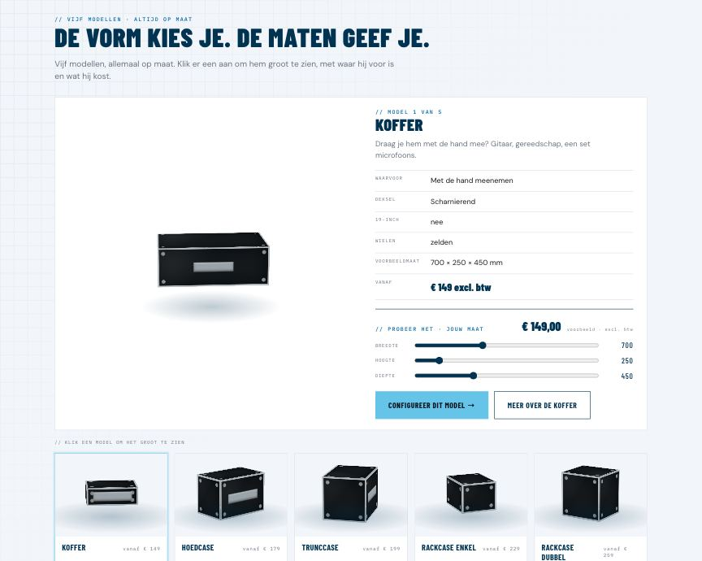
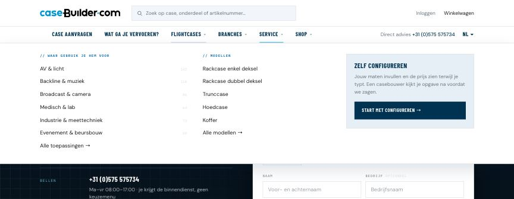
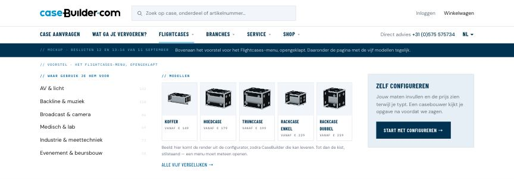
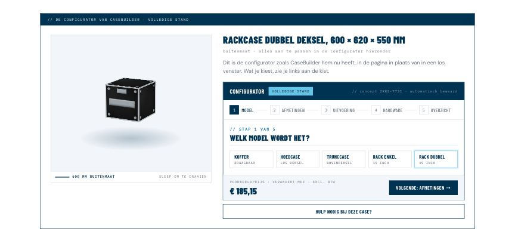
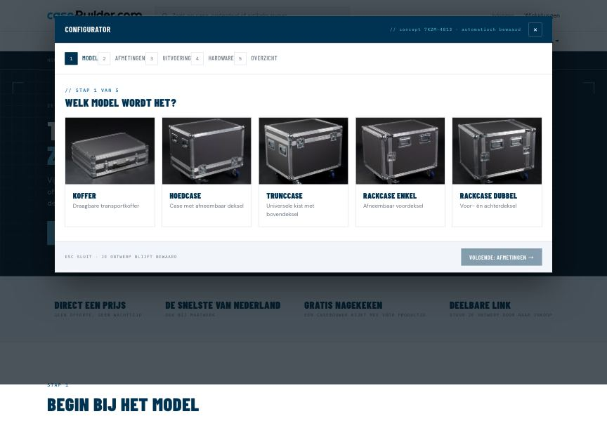

Alle tien punten zijn beantwoord en verwerkt op 12 september. Per punt staat bovenaan wat je koos en wat ermee gedaan is; de keuzes en voorbeelden eronder blijven staan om terug te lezen. Wil je iets herzien, kies dan opnieuw en stuur de tekst onderaan door.
✓ Gekozen en verwerkt · 12 septemberLabel “Hier begin je” met de kop “Hoe wil je beginnen?” — stond al zo, dus niets veranderd.
Je schreef bij de tegels: “Hier begin je.” Ik heb dat als klein label boven de kop gezet, met de kop “Hoe wil je beginnen?” die je koos.
Hoe wil je beginnen?
Maten bekend? Prijs in vijf stappen.
Zeg wat erin gaat, wij bepalen de maten.
Bel of mail, iemand uit de werkplaats denkt mee.
✓ Gekozen en verwerkt · 12 septemberAlleen maten en hoeken. Het slot staat nu in L3, en de deur ernaartoe noemt hem met zoveel woorden.
Je schreef: “voor L2 is het maten en hoeken”. Op 11 september stond het slot er ook bij, en in de mockups staat het er nu in.
Houden: een slot kiezen is bij een case op maat een gewone vraag, en het kost niets extra’s in de configurator.
Het slot kies je dan pas in de volledige configurator (L3).
✓ Gekozen en verwerkt · 12 septemberAllebei: het aanvraagblok met “Case aanvragen →” als knopregel, en daaronder de regel naar een eigen maat.
Je schreef voor L1: “niet precies wat je zoekt? case aanvragen, wij bouwen hem custom voor je”. Daarmee verviel “Andere maat nodig? → op maat (L2)”, dat op 10 september de ingang naar L2 was.
Allebei: het aanvraagblok als hoofdzaak, en eronder een regel voor wie alleen een andere maat wil. Dat is de snelste weg voor die bezoeker, en L2 is er juist voor.
Alleen een andere maat? Kies je eigen maten — je begint met de maten van deze kist.
✓ Gekozen en verwerkt · 12 septemberDe kop van v1, daaronder een nieuwe sectie over wat een flightcase is, en dan het blok met de vijf modellen.
Punt 12 van ronde 1: “ik wil dit beter zien in een mockup”. Die staat nu in flightcases-v2: vijf modellen tegelijk, draaiend, klikken maakt er de grote van, met schuiven voor je eigen maat.


✓ Gekozen en verwerkt · 12 septemberIn de echte balk, op elke pagina, met de modelfoto’s als beeld. Renders uit de configurator vervangen die later.
Punt 13–14: “laat eerst zien beter in een mockup”. Het voorstel staat bovenaan flightcases-v2; het echte menu is nog ongewijzigd.


✓ Gekozen en verwerkt · 12 septemberIn de pagina. Vastgelegd dat het een iframe van de bestaande dienst is en dat CaseBuilder dit ontwerp nabouwt in hun frontend.
Je vroeg om L3, de huidige volledige configurator, in de productpagina. In de mockup draait hij in de pagina naast de kist; nu opent hij als los venster over de pagina.
In de pagina: de kist blijft zichtbaar en L1, L2 en L3 werken op dezelfde plek. Of de configurator zo kan draaien, is een vraag aan CaseBuilder.


✓ Gekozen en verwerkt · 12 septemberNaar de shop met je zoekwoord: die opent op het tabblad met de meeste treffers en zegt wat er elders ligt.
Het motto uit ronde 1: “we hebben het, jij maakt het, of wij maken het”. Nu brengt “We hebben het” je naar het shopoverzicht, zonder wat je typte.
Naar de shop met je zoekwoord als filter: wie “gitaar” typte, ziet meteen de gitaarcases. Dat vraagt een zoekfilter in de shop.
✓ Gekozen en verwerkt · 12 septemberAlleen in de shop. Waarom, hoe het werkt en wat er nog moet, staat in verder-waar-je-was.md in de repo.
Punt 06 van ronde 1, nu gebouwd als smalle strook direct onder de hero van de homepage.
✓ Gekozen en verwerkt · 12 septemberAls gewone categorie onder Backline & muziek. Achtendertig categorieën werden er negenendertig.
Staat nog open sinds de shop-mockup: de DJ-cases staan in de shop onder Backline, in een categorie die in de echte indeling van 38 niet bestaat.
DJ-cases gaan via de aanvraag of de configurator; de drie in de shop-mockup vallen weg.
✓ Gekozen en verwerkt · 12 septemberNaar het archief: v3, v10, v12 en editor v1 staan niet meer in de versiebalk; de bestanden blijven bestaan.
Afgevallen maar nog in de versiebalk: homepage v3, v10 en v12, en editor v1 (de eigen L2-editor).
Naar het archief: uit de versiebalk, bestand blijft, zodat oude links blijven werken en de afweging terug te lezen is.
homepage-v3.html · homepage-v10.html · homepage-v12.html · editor-v1.html — blijven bestaan, via homepage-varianten “opzij”
homepage-v3.html · homepage-v10.html · homepage-v12.html · editor-v1.html